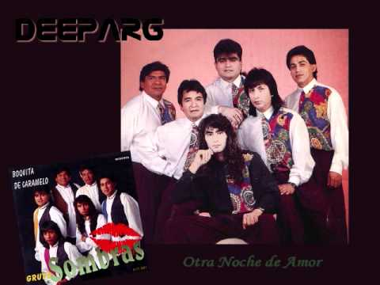

Tropi Rama
Amar Azul
No te olvides mujer
DJ NEGRO DUB
Cumbia mafia
Daniel Agostini
El Regalito
Sonora Tropicana

El Gran Varon
Grupo Ginsu

Greysi
Grupo Kalu
Haceme un pete
Grupo Sombras

Lucerito
Huguito Flores

Te Hubieras ido antes
Sonora Dinamita
humillate
Los Dinos
Ingrata
Los Charros
La ultima Cancion
Los Avilas

No me abandones
Doña Petrona
Los Montes de Maria
Gilda
Pasito a Pasito
Guachin
Porque no me lo das
Super G Colombia
Corazon Enamorado
Fito Olivares

La Negra Catalina
Gilda
La Puerta
Ginsu
Juego de Amor
Habana Combo
Matala
Sonora Dinamita
El viejo Del sombreron
Luis Ornelas
Tu retrato
Jimmy y su Combo
Fiesta De Cumbia
La Mission C
Noche de Cumbia
Grupo Sombras

Otra noche de Amor
Pancho Barraza
Pero la Recuerdo
Sonora Tropicana
Quien Como Tu
Sebastian
No la pueden parar
Super G Colombia
Amores Sin Corazón
Grupo Maravilla
La Barca
Damas Gratis
No tomes
Xochilt
Tanto Amor